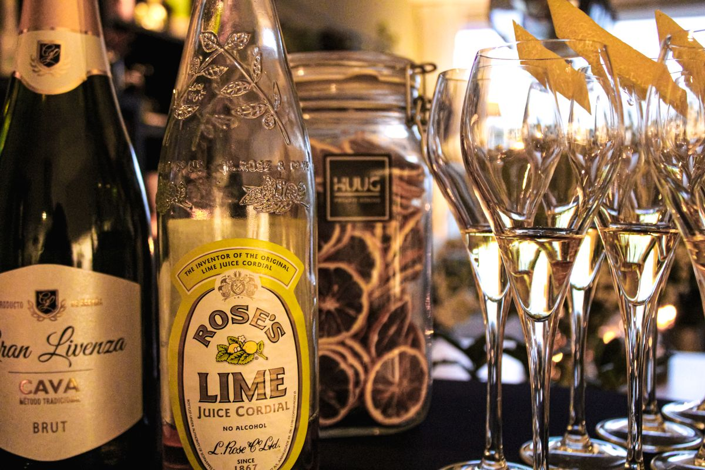
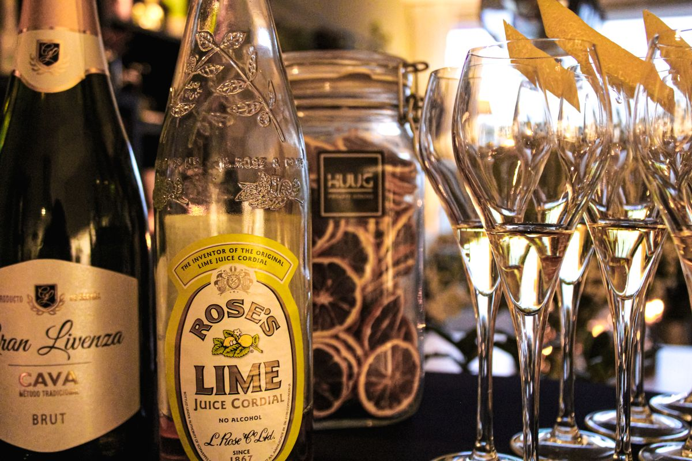
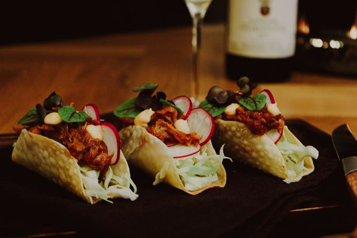
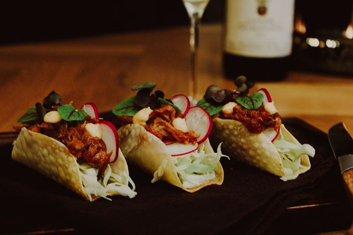

Over HUUG
Kent u dat, wanneer u een ruimte binnenkomt en u van de heerlijke geuren direct trek begint te krijgen? Wanneer u nieuwsgierig wordt naar wat er op tafel komt te staan? Dat spreken we van tevoren natuurlijk af als ik uw private chef mag zijn, maar dat is het gevoel dat ik voor jou wil creëren.
Mijn missie is om mensen te ontzorgen en te laten genieten van eerlijk en lekker eten. Ik ben Hugo van Aspert en met mijn private dining en catering bedrijf hoop ik dit voor u te mogen neerzetten.
Heeft u een feest, zakelijke gelegenheid, belangrijke gasten over de vloer of wilt u gewoon een avondje ontzorgd worden? Zoekt u een privé kok / privé chef? Dan bent u aan het goede adres. Neem contact met me op!


Hugo van aspert
Vanaf mijn 13e ben ik naar een middelbare school in België gegaan waar ik vanaf het 2e jaar de kans kreeg een Hotelopleiding te volgen. Het uitgangspunt van deze opleiding: “we leren het onze leerlingen op het hoogste niveau, dan beschikken ze over de vaardigheden om in alle denkbare horeca bedrijven te werken” En die passie heb ik overgenomen.”
En dat vergeet ik nooit meer, de passie van mijn keukenleerkrachten was ongekend. En die passie heb ik behouden en voortgezet. Naast mijn dagelijkse baan in een restaurant ben ik gestart met HUUG Private Dining omdat ik merkte dat ik ergens mijn ei in kwijt moest, echt doen wat ik leuk vind. En 100% mijn creativiteit ergens in kwijt kunnen.
Tegenwoordig ben ik actief als privé kok en privé chef in Maastricht en omgeving. Ik heb al veel ervaring opgedaan als privé kok aan huis. Ook draai ik regelmatig events en catering opdrachten.

Werkproces
Bent u van plan om een event te organsieren? Of wellicht een familiediner thuis? Wat voor aanvraag u ook heeft, het liefste kijk ik met u mee om een menu samen te stellen op basis van uw wensen.
Uiteraard kunt u ook een aanvraag doen met een van mijn voorbeeldmenu’s als keuze. Hierin kan qua gerechten ook geschoven worden in overleg.
Of het nou gaat om een heerlijk uitgebreide avond met meerdere gangen precies afgesteld op uw wensen of een van mijn menu’s met all-time-favourites en specials, ik bespreek graag met u de mogelijkheden en wensen voor uw event. En het spreekt voor zich dat u wordt ontzorgd, dus Huug Private Dining zorgt ervoor dat uw keuken na afloop weer netjes wordt achtergelaten
 

 

REVIEWS
“Met passie en toewijding ging Hugo aan de slag. Alles tot in detail goed voorbereid maakte hij voor ons een smakelijk en feestelijk diner.”
“Onlangs kwam Huug bij ons een feest verzorgen, alles tot in de puntjes geregeld! Super vriendelijk een heel vakkundig. Zeker een aanrader.”